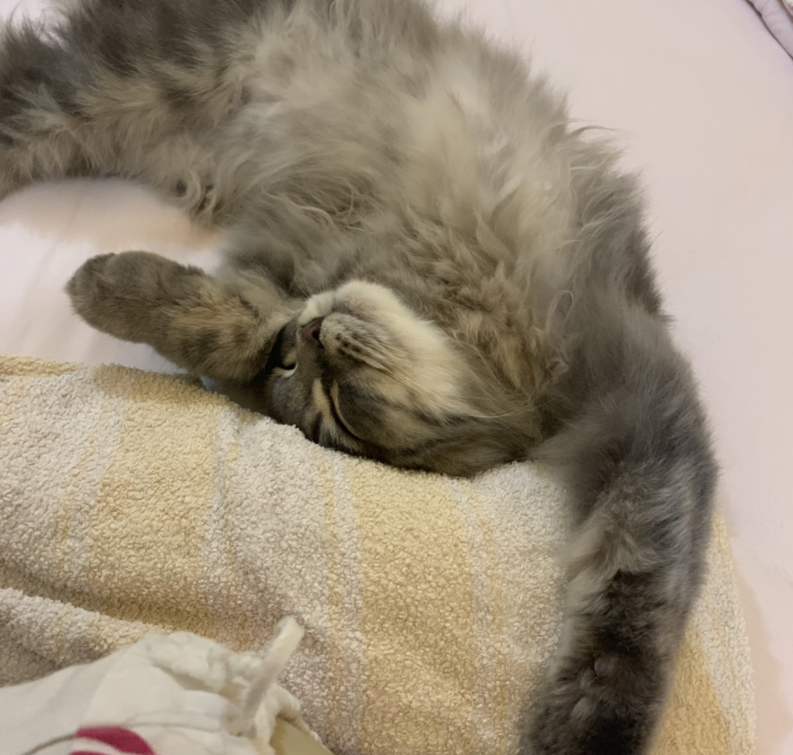

All About Me
Where are you from?
Indonesia!
When is your birthday?
6th of April!
Why did you choose to study Communication Design?
im always very intersted in posters and advertisement techniques which is why im gravitating towards communication design!
What are you most inspired by?
chaos in the city!
What has been your favorite class so far? Why?
lab typography!
What are you hoping to learn in this class?
Developing my ideas and being able to translate them fully without losing its values!
What do you like to do in your spare time?
Make music and stream tv shows!
When you imagine a graphic designer, what do you think they do on a day to day?
Create layouts, sketches of websites, moodboards for a specific client, in front of a laptop for a long period of time!
When you imagine a developer, what do you th ink they do on a day to day?
a lot of coding i hope!
Where do you see yourself after graduating? What kind of job do you want to have?
I wanna be a creative director after i graduate!
Do you consider yourself an artist, a designer, both, or neither?
Both... ish!
What kind of design classes have you taken before this one?
Typography and coding classes!
Do you know most of the students in our class already?
I know Ani and Carly!
List your favorite typefaces.
- Helvetica
- Athelas
- Baskerville
What are you top 3 favorite colors?
Your answer goes here!
- Blue
- Red
- Orange
Which artists do you like?
April Greiman is one of my favorites!
List out some music that you like to listen to
Novo amor is my all time favorite band!
Did anything interesting happen over winter break?
Me and my family went to Japan!
Have you ever built a website?
Yes, last semester for creative computing!
Do you have any questions for me?
How long have you worked as a graphic designer?
What is your first memory of using the internet?
Dress up games and youtube!
Do you have a favorite place to visit?
New Zealand and Japan!
Do you speak any other languages?
Indonesian!
What is your favorite food?
Sushi!
What is your favorite animal?
Seat otter or snow leapord!
Do you have a pet?
A scottish fold named Miso!

Is there any other information you’d like me to know?
Not much!